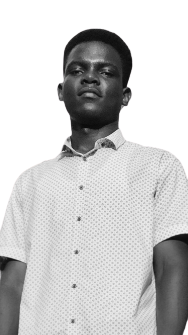
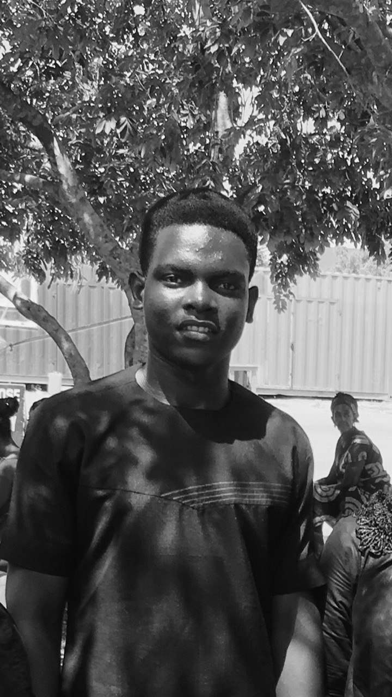

Asare
here!
a budding UI/UX designer enthusiastic about crafting user-friendly
digital experiences. With a fresh perspective and a foundation in
design principles. I believe in the power of simplicity and user-
centric design to create engaging solutions.


I'm Asare Nkansah, a passionate UI/UX designer at the
convergence of creativity and functionality. My expertise
in HTML, CSS, and JavaScript empowers me to craft user-centric digital experiences.
I thrive on the transformative potential of design, seamlessly blending aesthetics With
usability. My journey is dedicated to building captivating
interfaces that bridge technology and human interaction.
Let's collaborate to shape remarkable user experiences together.